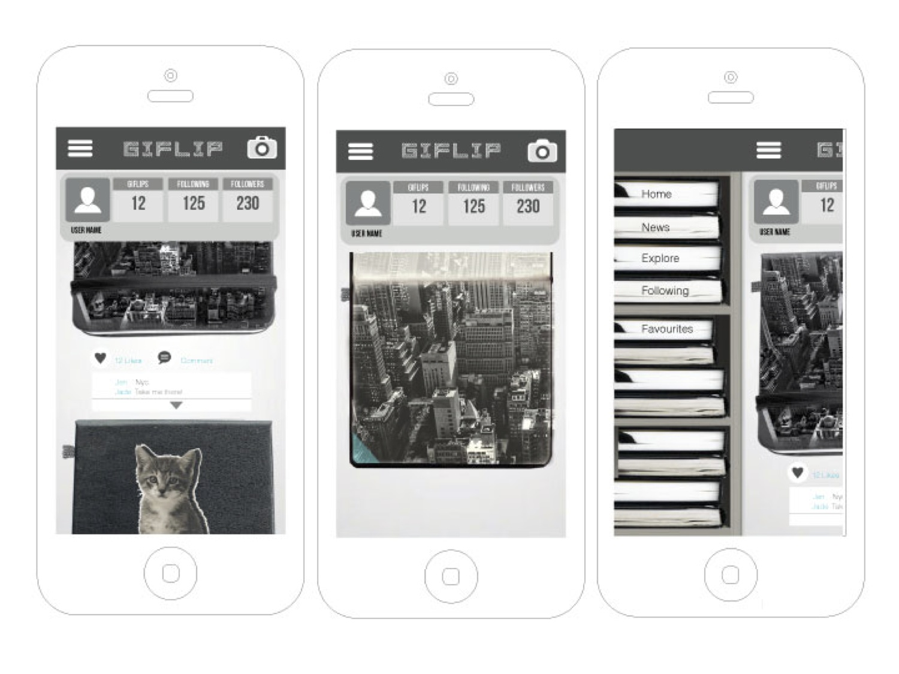
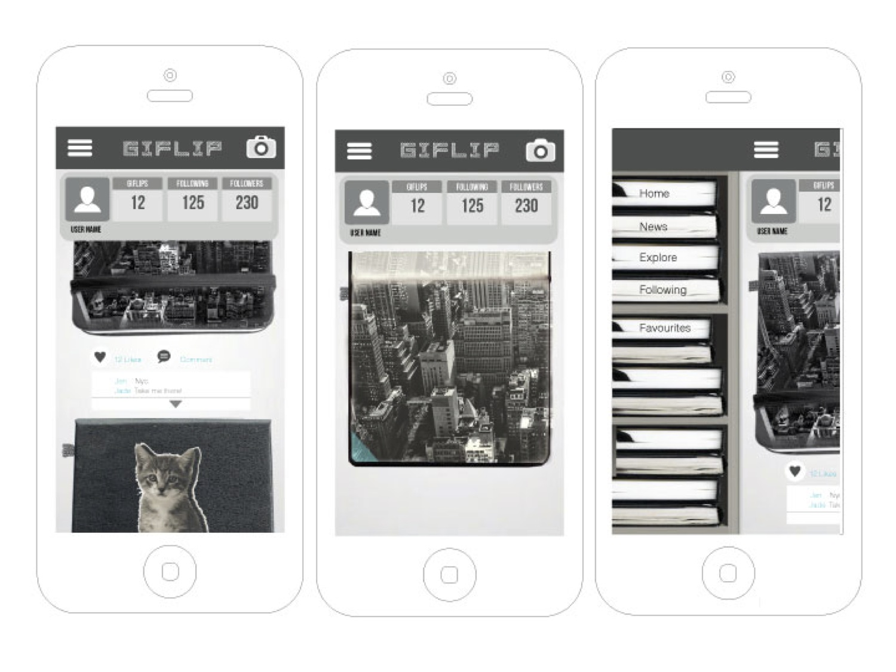
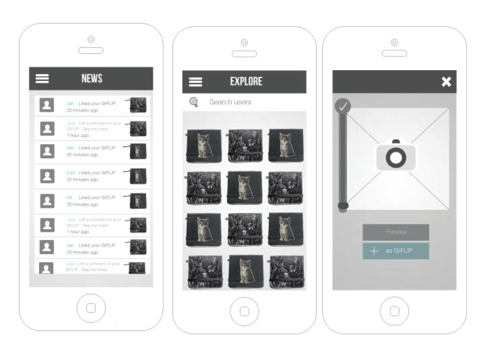
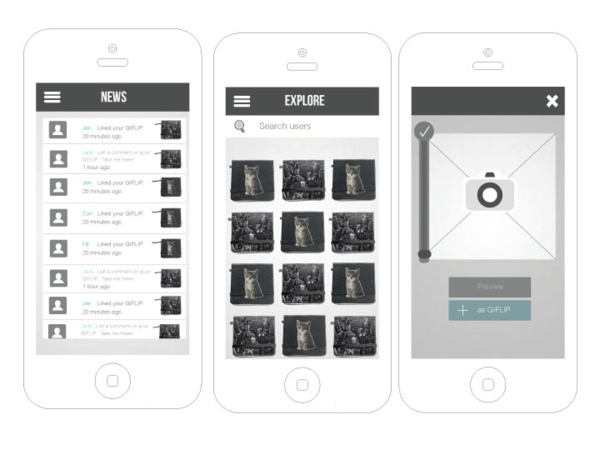
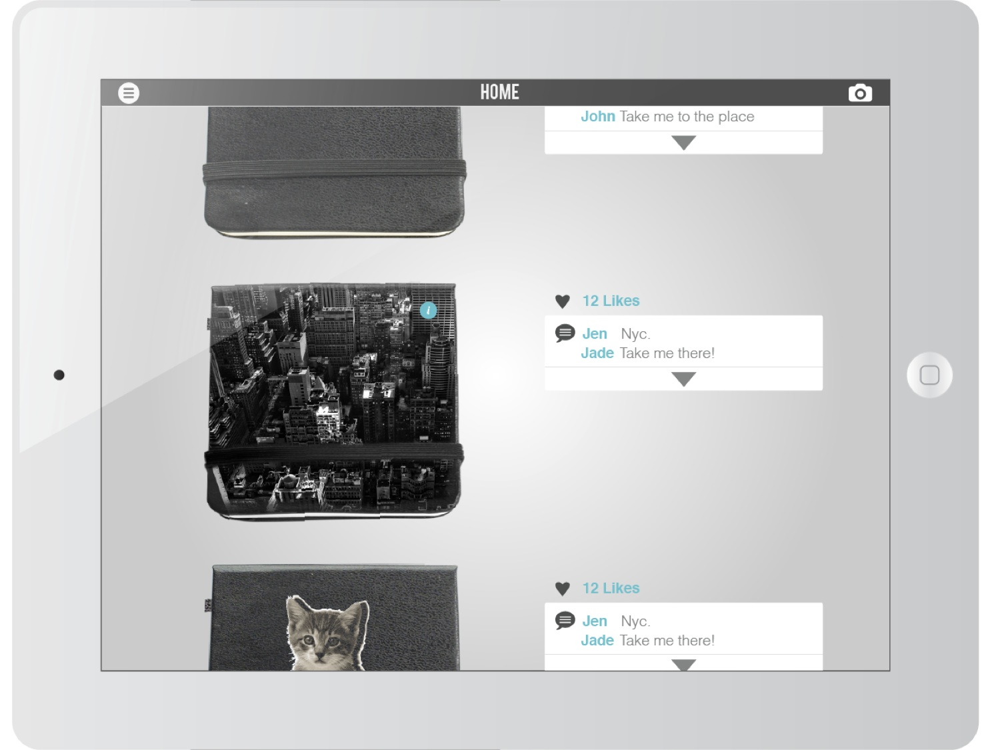
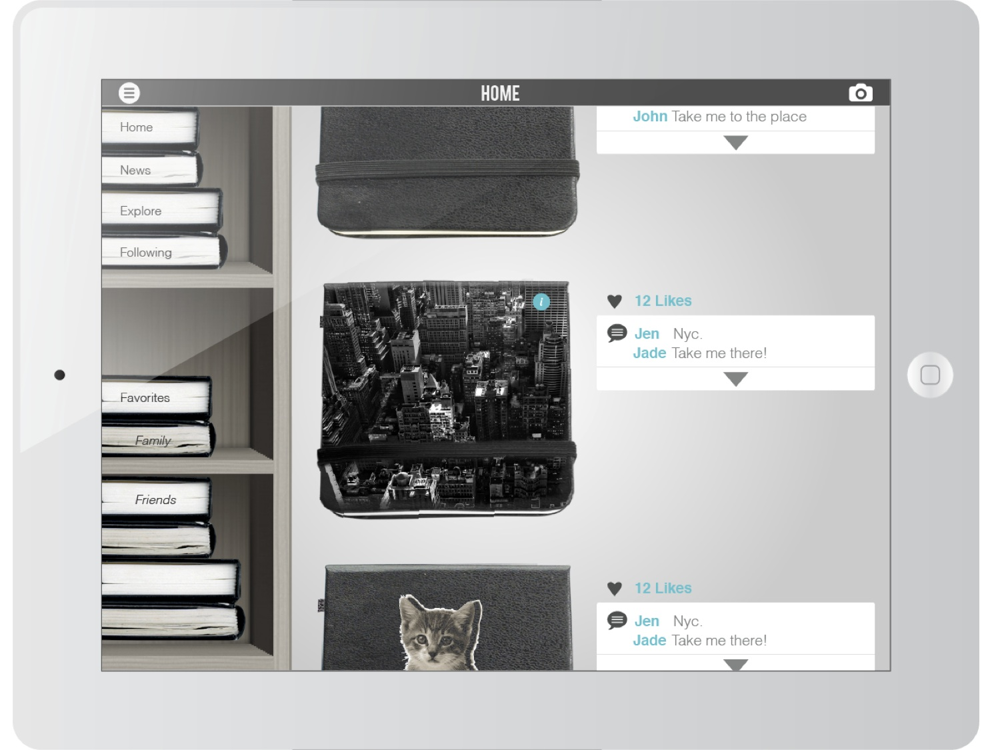
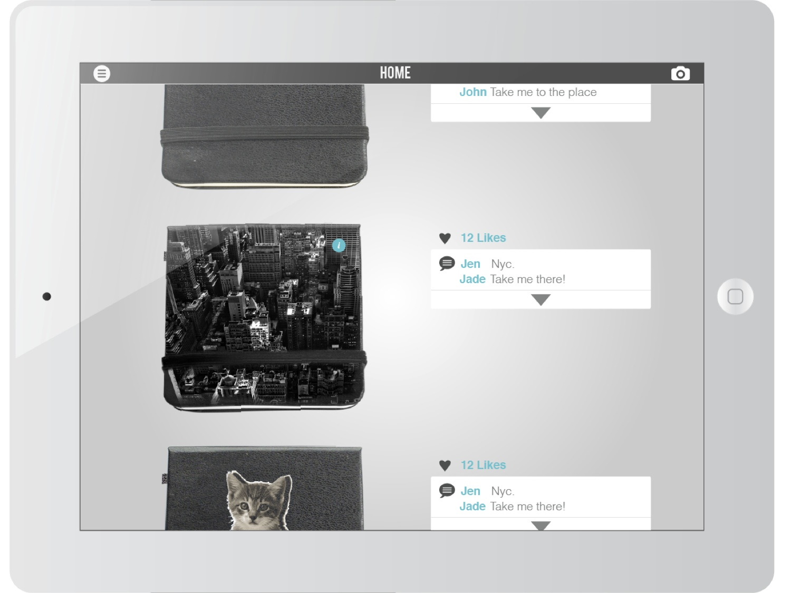
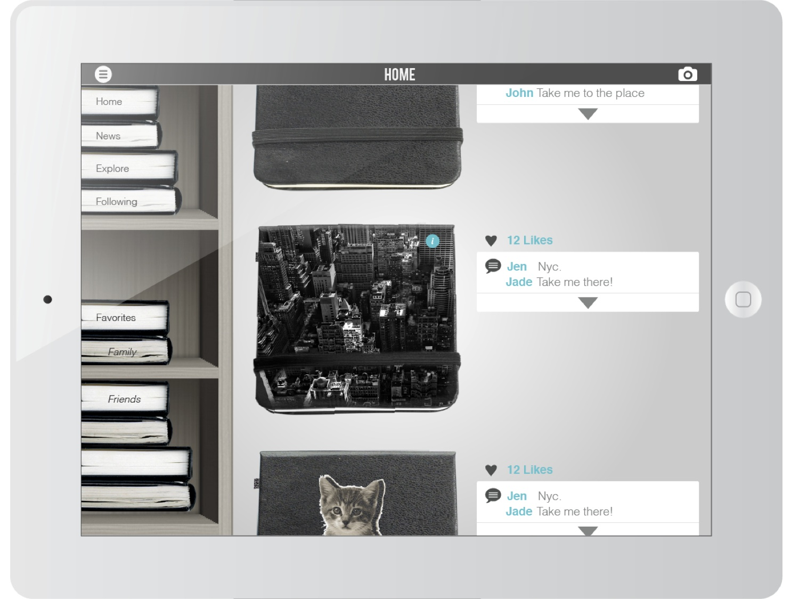
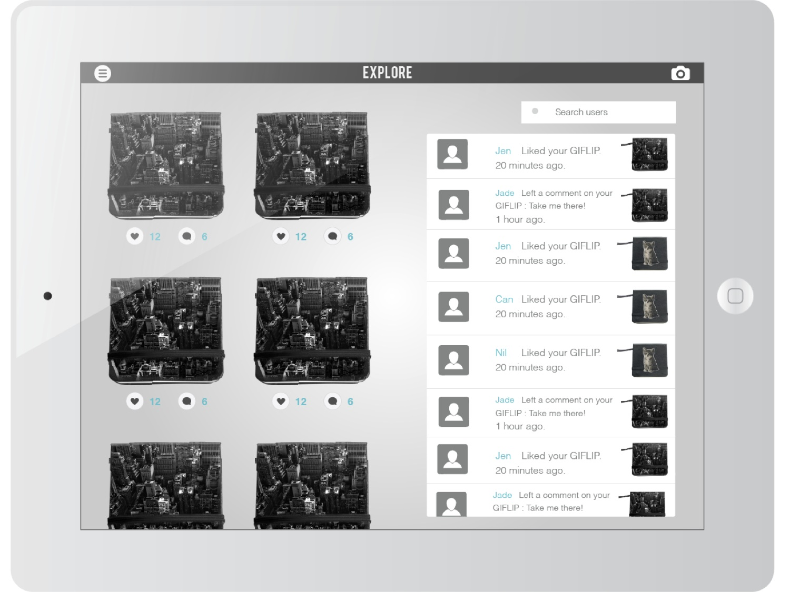
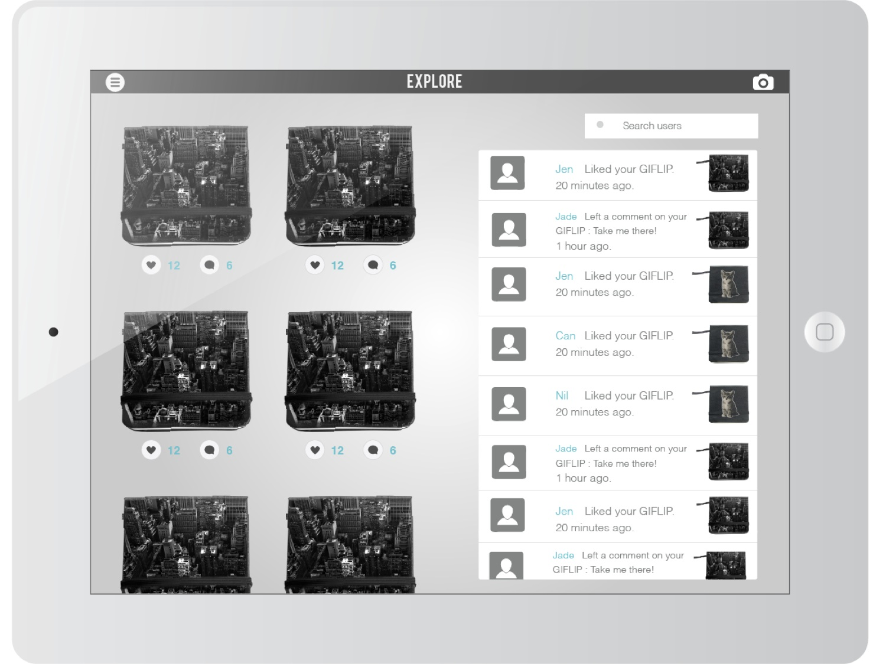

GIFlip
2013
UI/UX
GIFlip is a concept design for an app for browsing and making GIF animation on mobile device. While visual design of user interfaces in smartphone had officially moved beyond skeuomorphism after Apple had adopted flat design into iOS7's revamped visual. I believe that it did not mean that skeuomorphism had ended its role.
On the other hand, it is now taking more important role than it ever was in interaction design. How could we navigate this digital medium while translating interactions from older medium to make something that could make people feel close with while also intuitive to use?
This project brings re-emerging popular GIF animation and interaction of flipbook animation together in one app. Swipe through the edge of your GIF to see animation. Draw and flip through those frames of your imagination.
 

 



 



 
